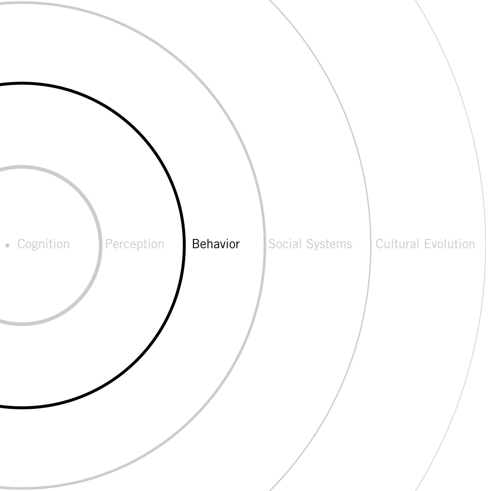

The thought of understanding and designing for social norms reminded me of an essay by the writer Jonathan Franzen called Farther Away. Through the essay, (and the book of the same name), Franzen uses his personal journeys and experiences to reflect on literature and popular culture. He describes how Defoe’s Robinson Crusoe is often considered the first modern novel, as it took readers on a journey in a way that placed them on the island. It immersed readers in a way that books before it didn’t: its individualism gave people their own "island". But he goes on to explain how the arrival of the internet has shifted things. "With "Robinson Crusoe," the self-had become an island; and now, it seemed, the island was becoming the world." he writes.
The arrival of the internet has in many ways allowed for a proliferation of millions of subcultures, each with ardent fans and followers, none of which need to be large enough to become mainstream to sustain and even grow. People from anywhere in the world login to a subreddit or a forum and discuss what might’ve been a niche interest but has found a growing community online. Patreon, Kickstarter and the like have created a revenue stream, allowing for people to turn their hobbies into full-time interests. Micro-drops, merchandising and other collaborations help build their brands, and turn a niche into a growing business segment. For example, where musical instruments were once the domain of legacy companies like Gibson, or catalogue manufacturers like Montgomery-Ward, I can now buy a guitar made in Indonesia by a company started by a Swedish musician and Youtuber. Some of the niches, such as video game streaming, have even overtaken traditional mainstream media, though in most people’s minds they remain a niche hobby.
An effect of this is how it has shaped the idea of the "influencer". Where tastemakers were usually specialized and on the cutting edge, such as fashion designers or celebrities, today’s tastemakers could be a content creator in a niche genre, such as video game streaming. And where only a few professional reviewers existed in the past, today anyone with a laptop could become an influential reviewer.
Also interesting is how the traditional "tastemakers" are reacting and evolving as a result. On one hand, they’ve collaborated with these influencers to create exclusive collections. But on the other hand, modern fashion often reflects a view of what’s happening on the street, or in association with popular utilitarian aesthetics. Brands such as Vetements and designers such as Demna are no longer shaping societal norms but are merely reflecting and commenting on them.